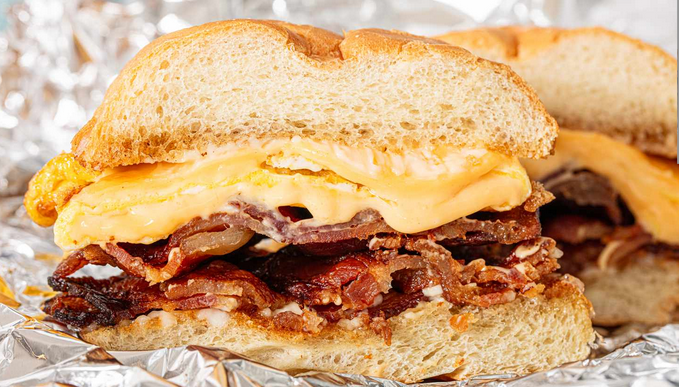

Bacon Egg and Cheese.

This is a real easy recipe that combines most essential items into a packed meal that you can take with you anywhere.
Recipe
- 2 Eggs.
- 2 slices of american cheese.
- 1 Kaiser roll.
- 3 slices of bacon cut in halves.
- 1 tps Oil or butter for the pan.
- Salt and pepper to taste.
Steps
- On a hot pan or skillet on high heat, cook bacon until crispy.
- Once bacon is cooked, strain most but not all of the bacon fat from the pan.
- Use the remaining bacon fat in the pan to cook the eggs.
- You can either scramble or fry the eggs. For this instance we are scambling them.
- Pour eggs into pan on medium heat and cover the entir pan.Let eggs sit until the top is beginning to cook.
- Place cheese in the middle fo the egg.
- Fold Egg in half and place on kaiser roll.
Thats it! You are done. Enjoy!
Recipe Book